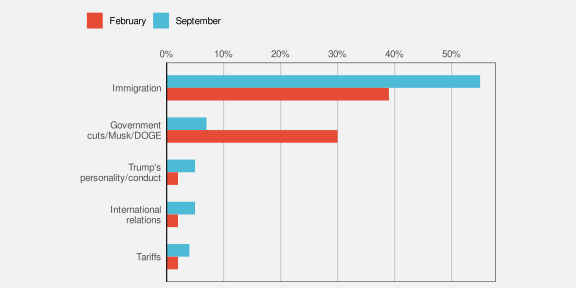
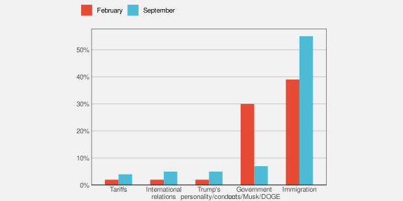

7 Congruent Encodings
In previous chapters, we have seen that, part of the reason why some well-known plots, like bar plots, are effective is because they encode data values to the basic visual features of a data symbol. For example, encoding the number of youth offenders as the length of a bar in a bar plot (Figure 5.1). We have also seen that basic visual features like length are effective because we can accurately decode data values from those visual features.
The purpose of this chapter is to show that, in order to understand the effectiveness of a data visualisation, we need to consider more than just the accuracy or capacity of our encodings from data values to basic visual features.
7.1 Implicit decodings
Figure 7.1 shows two lines, one longer than the other. We can decode information from these lines without any explicit encoding of data values. For example, we can decode that one line is twice as long as the other without knowing anything about what “twice” represents in terms of data values. In other words, there is an implicit decoding from the lengths of the lines to data values (Figure 7.2).1

When an implicit decoding exists, we can produce a more effective encoding by building upon the implicit decoding. We can explicitly encode data values as visual features in such a way that the decoding is congruent with the implicit decoding, in the sense that the implicit decoding leads back to the same data values that we explicitly encoded (Figure 7.3).2

7.2 Part-to-whole
Figure 7.4 shows a pie chart of the proportions of total youth offenders between 2011 and 2021 in different ethnic groups and a bar plot of the same data. We learned in Section 3.5 that encoding quantitative data values, like proportions, as lengths, like in the bar plot, is more accurate than encoding the proportions as angles or areas, like in the pie chart.
However, the superior representation of the fact that Māori offenders make up approximately 50% of the total is the pie chart rather than the bar plot. Although it is easy to determine from the length of the bar and the scale on the x-axis in the bar plot that the bar for Māori is just below 0.5, it is even easier, without any guides at all, to see that the light blue wedge in the pie chart is just under half a circle. It is also easy to see that the red wedge is close to a third of a circle.3


The reason why the pie chart in Figure 7.4 is more effective than a bar plot for conveying simple proportions like a quarter or a third or a half is because the wedges in a pie chart have an implicit decoding to fractions of a whole. A semi-circle has a strong visual association with half of a circle and thirds and quarters are similarly evocative.
One reason why a pie chart can be effective is because segments of a pie vividly convey simple fractions of a whole.
Figure 7.5 shows that if we place a bar representing a proportion bar within a reference rectangle that corresponds to a proportion of 1, then we can also create a part-to-whole congruence with bars, though the effect is not as strong as it is for pie wedges.

7.3 More is more
We saw in Section 3.3 that visual features like length and area are appropriate for decoding quantitative values. For example, in Figure 7.6, the lengths of the bars are appropriate for decoding the total number of offenders in different ethnic groups.
Part of the reason why length and area work so well is because a longer bar implicitly conveys the idea of more.4 By contrast, the position of data points in a dot plot of the same data, as shown in Figure 7.6, do not inherently convey the same sense of more. In a bar plot, the data symbols that correspond to larger data values are actually larger data symbols; the presentation of larger data values is more abstract in a dot plot.


Another way that length can convey information more naturally than position is visualising negative values. For example Figure 7.7 shows the total points differential (points scored minus points conceded) for Tier One nations at Rugby World Cups (see Table 4.1). The direction of the bars very clearly indicates the change from positive points differential to negative points differential.

By comparison, the change from positive to negative points differential is much more abstract in a dot plot of the same data (Figure 7.8).

One reason why bar plots are effective is because larger data values are represented by larger data symbols.
A more subtle effect can be seen in Figure 7.9, which shows two different bar plots of the total number of offenders in different ethnic groups. In this case, the vertical bars are more natural for conveying count data like this because of the natural correspondence with stacks of items.5


7.4 Same is same
In Section 2.5 we saw that the visual system is very sensitive to differences, particularly when everything else remains the same. This means that encoding changes in data values to changes in data symbols will be effective because the visual system will notice the differences in the data symbols. More specifically, if a visual feature of a data symbol changes then the visual system will notice that change. Furthermore, if a visual feature of a data symbol changes while all other visual features of the data symbol remain the same, the visual system will notice the change more easily (Section 2.5). Put another way, visual differences are implicitly decoded as changes in the data values and visual constancy is implicitly decoded as no change in the data values.
For example, in a bar plot like Figure 3.1, the data symbols are bars and only the lengths of the bars and the vertical positions of the bars are different. The “widths” of the bars and the colours of the bars remain the same.
Another reason why bar plots are effective is because the bars differ in length, but are otherwise the same.
7.5 Dissonant encodings
The fact that length and area implicitly convey amounts means that care must be taken not to confuse that association.6 For example, Figure 7.10 shows the number of times each team entered the opposition’s final third during a match at the 2023 Women’s World Cup.7 The final third of the pitch is shown as darker green regions, broken into five different zones, with a number of entries for each zone and each team represented by a line with an arrow.
In Figure 7.10, longer lines correspond to a larger number of entries. However, the bars start at the halfway line on the pitch rather than at the final third of the pitch. This means that the zero entries by South Africa into the second-from-right zone is encoded as a non-zero-length line. Apart from making comparisons of the line lengths very inaccurate, this creates a confusing visual effect because the viewer is expected to decode a non-zero length to a value of zero.

For any example of congruence, where a visual feature implicitly decodes to a property of the data, there is an opportunity for dissonance if the visual feature is used inappropriately. We can improve the effectiveness of a data visualisation by taking advantage of visual congruence and we can reduce the effectiveness of a data visualisation if we create visual dissonance.8
If we fail to make our explicit encodings congruent with any implicit encodings—if we create a dissonant encoding—we can make it harder and more confusing to decode a data visualisation because there is more than one possible decoding (Figure 7.11).

We saw in Section 7.4 that we want to encode differences in data values to differences in visual features and keep everything else the same. Failing to follow that approach will make it harder to perceive changes in the data values. However, a worse error, and another source of visual dissonance arises if we change visual features without any underlying change in the data values.9
Figure 7.12 shows a data visualisation of the relative number of people aged over 100 for females versus males.10 There are numerous problems with this data visualisation, but here we will just focus on the horizontal position of the cake images. The cakes for females are positioned to the left of the cakes for males, which is acceptable because that difference in position reflects a difference in the data—males versus females. However, within each gender, the cakes are also staggered a small amount to the left then to the right. This visual difference in the cake positions does not correspond to any difference in the data values. We are tempted to seek meaning from the the left-to-right staggering of the cakes when no meaning exists.

A data visualisation is not effective if it contains encodings that are dissonant because that can cause distraction and slower and/or incorrect decoding of data values from visual features.
7.6 Case study: Time’s arrow
Figure 7.13 shows the results of a 2025 poll that asked what was the best thing that the Trump administration had done, comparing results in February to results in September. In terms of encodings, this bar plot makes good use of (vertical) position and (horizontal) length to encode different policy issues, the difference in dates, and the percent of respondents who voted for each policy. However, when we look at the top two bars, there is a temptation to read the pairs of bars in order from top to bottom.11 If we do not attend carefully to the legend, we may perceive a decrease in the (relative) popularity of the immigration policy and an increase in the popularity of DOGE. This is a subtle example of visual dissonance.

Figure 7.14 shows another version of the bar plot, with the bars running vertically. In this plot, the natural reading from left to right leads to the correct interpretation: the (relative) popularity of DOGE has declined while the popularity of the immigration policy has increased. This is an example of visual congruence.

7.7 Case study: Jittering
We have data on the the number of points that were scored in every World Cup match by Tier One nations (the top 10 rugby-playing nations). Table 4.1 shows a sample of these data.
Figure 7.15 shows a dot plot of the number of points scored by teams from different hemispheres at Rugby World Cup matches. In this data visualisation, the data symbols are dots, the number of points scored is encoded as the horizontal position of the dots, and the hemisphere is encoded as the vertical position of the dots. We saw a similar visualisation of these data in Figure 4.5, which demonstrated the problem of overplotting of points that share the same data value.
In Figure 7.15, to ameliorate the overlapping of data points, a random amount of “jitter” has been added the vertical position of the dots. The filled interior of each dot is also semitransparent so that we can see where some points still overlap.

The dot plot in Figure 7.15 is effective for decoding to the number of points scored because each data value is encoded as the horizontal position of a single data symbol. Similarly, we can easily decode the hemisphere from each point. The proximity of the data symbols from the same hemisphere means that it is easy to perceive two “rows” of points (Section 2.7).
On the other hand, the jittering means that there are visual differences between the vertical positions of the dots, within the same hemisphere, that do not correspond to any differences in data values. For example, there are two dots representing matches where a team from the Northern hemisphere scored zero points. The data values for these two dots are identical (zero points scored and northern hemisphere), but they are visually different. The randomness of the jittering may help to dilute any temptation to seek meaning from the artificial visual difference, but the addition of jittering is a potential source of confusion.
Jittering data symbols is effective because it reduces the amount of overlap amongst data symbols, but jittering may also reduce the effectiveness of a data visualisation because it introduces visual dissonance.
7.8 Summary
The effectiveness of a data visualisation may depend on more than just the accuracy and capacity of visual features.
A congruent encoding is one where data values are explicitly encoded in a way that is consistent with an implicit decoding of the visual feature.
A data visualisation will be more effective if it is visually congruent, for example, data symbols are larger for larger data values or data symbols only change if the data values change.
A dissonant encoding is one where data values are explicitly encoded in a way that is inconsistent with an implicit decoding.
A data visualisations will be less effective if it is visually dissonant.
Bergstrom, Carl, and Jevin West. 2017. “The Principle of Proportional Ink.” https://callingbullshit.org/tools/tools_proportional_ink.html. 2017.
Bertini, Enrico. 2024. “Semantic Clashes in Data Visualization.” https://filwd.substack.com/p/semantic-clashes-in-data-visualization. 2024.
Bertini, Enrico, Michael Correll, and Steven Franconeri. 2020. “Why Shouldn’t All Charts Be Scatter Plots? Beyond Precision-Driven Visualizations.” CoRR abs/2008.11310. https://arxiv.org/abs/2008.11310.
Eells, Walter Crosby. 1926. “The Relative Merits of Circles and Bars for Representing Component Parts.” Journal of the American Statistical Association 21 (154): 119–32. http://www.jstor.org/stable/2277140.
Few, Stephen. 2004. Show Me the Numbers: Designing Tables and Graphs to Enlighten. 1st ed. Berkeley, CA: Analytics Press.
Kosslyn, Stephen M. 2006. Graph Design for the Eye and Mind. Oxford University Press. https://doi.org/10.1093/acprof:oso/9780195311846.001.0001.
Simkin, David, and Reid Hastie. 1987. “An Information-Processing Analysis of Graph Perception.” Journal of the American Statistical Association 82 (398): 454–65. https://doi.org/10.1080/01621459.1987.10478448.
Tversky, Barbara, Julie Bauer Morrison, and Mireille Betrancourt. 2002. “Animation: Can It Facilitate?” International Journal of Human-Computer Studies 57 (4): 247–62. https://doi.org/https://doi.org/10.1006/ijhc.2002.1017.
Vessey, Iris. 1991. “Cognitive Fit: A Theory-Based Analysis of the Graphs Versus Tables Literature.” Decision Sciences 22 (2): 219–40. https://doi.org/https://doi.org/10.1111/j.1540-5915.1991.tb00344.x.
Wilke, Claus O. 2019. Fundamentals of Data Visualization: A Primer on Making Informative and Compelling Figures. Sebastopol, CA: O’Reilly Media.
These implicit encodings are part of the reason why different visual features are appropriate for encoding quantitative verus qualitative data values. The length of a data symbol is appropriate for encoding quantitative data values because we implicitly decode amounts from length.↩︎
Tversky, Morrison, and Betrancourt (2002) describe a congruence principle: “the structure and content of the external representation should correspond to the desired structure and content of the internal representation,” where the “external representation” is a data visualisation and the “internal representation” corresponds to an implicit decoding.
Bertini, Correll, and Franconeri (2020) discuss measures of effectiveness beyond accuracy and capacity and refers to the congruence principle above as well as the idea of congnitive fit: “performance on a task will be enhanced when there is a cognitive fit (match) between the information emphasized in the representation type and that required by the task type” (Vessey 1991). The latter was focused on a comparison of plots versus tables (plots for spatial comparisons and tables for more complex cognitive tasks involving symbolic reasoning), but it is analogous to the idea of congruent encodings.↩︎
This defence of pie charts has existed for a very long time (Eells 1926) and continues to receive empirical support in more recent times (Simkin and Hastie 1987).↩︎
Kosslyn’s Principle of Compatibility states that “A message is easiest to understand if its form is compatible with its meaning”, plus explicitly “More Is More” (Kosslyn 2006).
Wilke (2019) has a similar Principle of Proportional Ink, which he attributes to Bergstrom and West (2017). A corollary is that bars in a bar plot should start at zero.↩︎
Several authors make an argument for vertical bars being preferred because they correspond naturally to accumulation and growth (e.g., Few 2004).↩︎
This is related to visual illusions (Section 2.10). There are decodings that the visual system performs whether we want it to or not, so we want to avoid conflicting with what the visual system does automatically.↩︎
This data visualisation is an adaptation of a graphic shown during the live television coverage of the match.↩︎
The idea of visual dissonance is just a logical inversion of the idea of visual congruence. This idea is not named in any literature that I could find, though semantic clashes (Bertini 2024) perhaps comes closest.↩︎
Kosslyn’s Principle of Informative Changes states that “People expect changes in properties to carry information” (Kosslyn 2006).↩︎
This plot is based on a data visualisation from the New Zealand Listener October 14-20 2023.↩︎
The idea for this data visualisation, and whether to question the vertical ordering, comes from a PolicyViz Newsletter. The original data source was a Washington Post poll).↩︎